Agent Harness · Các sơ đồ chi tiết v3
State, sequence, RAG, tool gate và evaluation. Mở từng SVG để đọc đầy đủ hoặc dùng sổ sơ đồ để phóng to.
Mở sổ sơ đồ · Đọc 9 tài liệu AI
Harness / component · hình 01
Orchestration / lifecycle · hình 01
Orchestration / lifecycle · hình 02
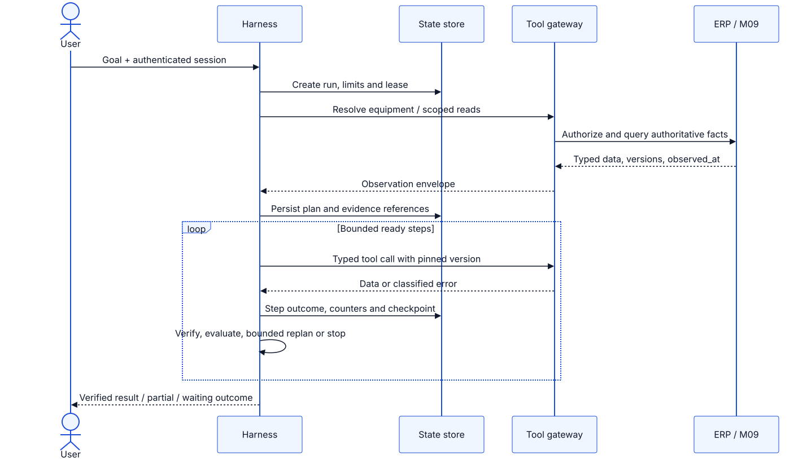
Orchestration / lifecycle · hình 03
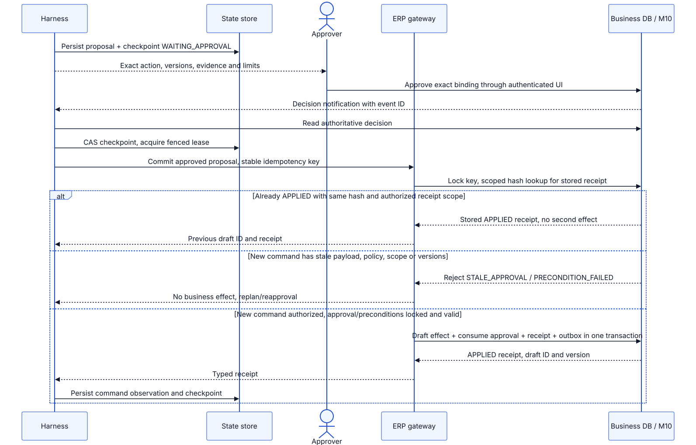
State và memory · hình 01
RAG ingestion / retrieval · hình 01
RAG ingestion / retrieval · hình 02
Tool gateway contract · hình 01
Reasoning / planning / execution · hình 01
Security và HITL · hình 01
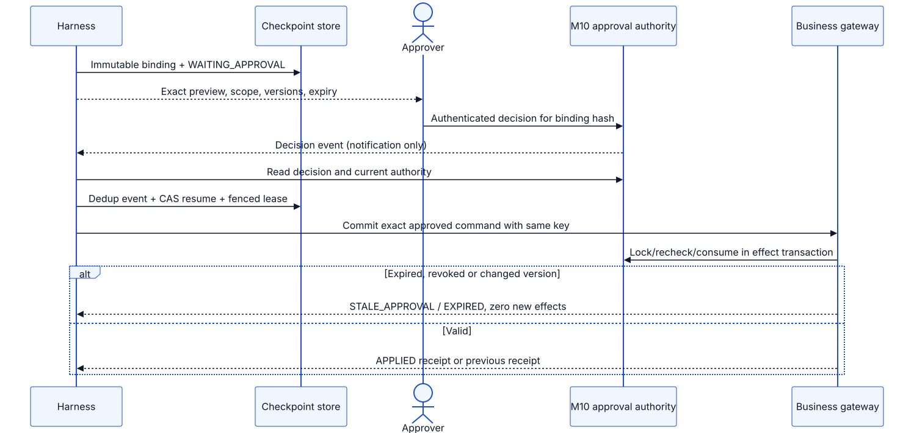
Observability / evaluation · hình 01
E2E scenarios · hình 01
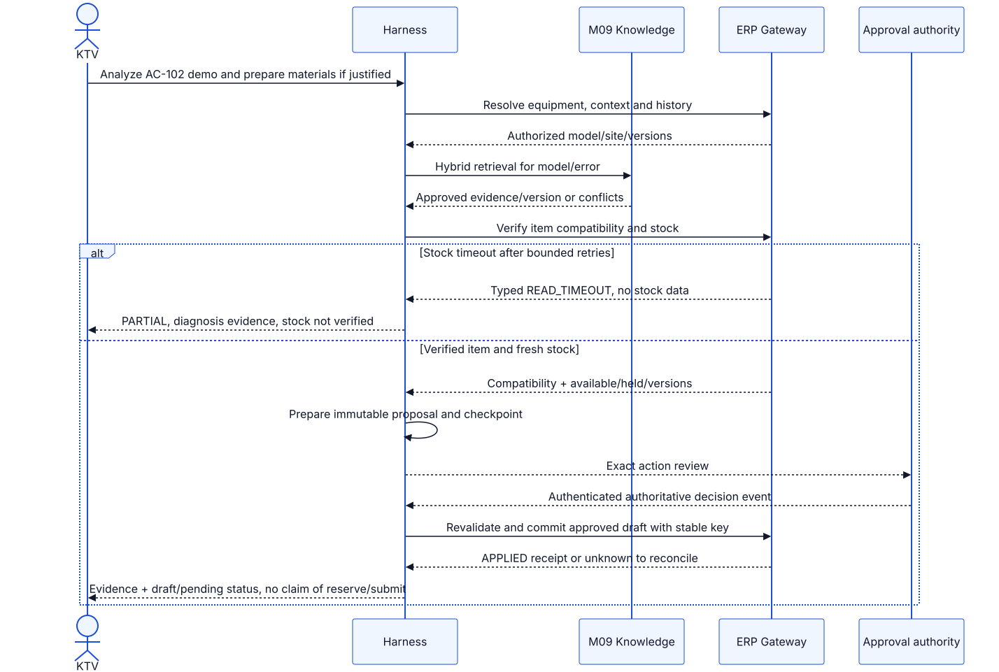